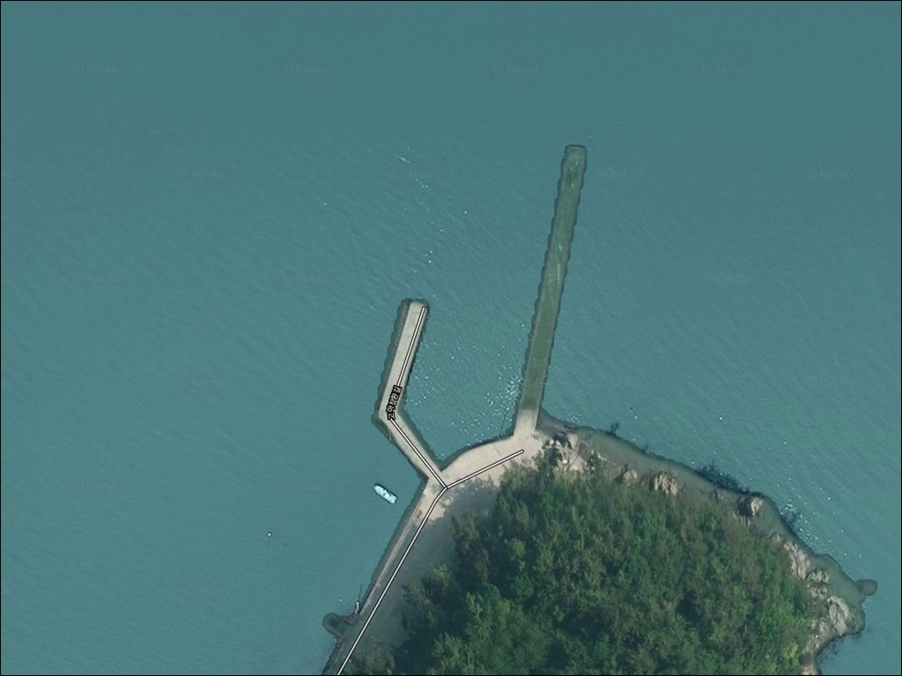
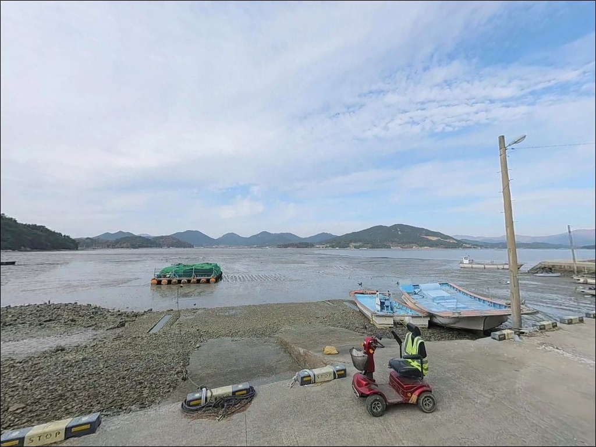
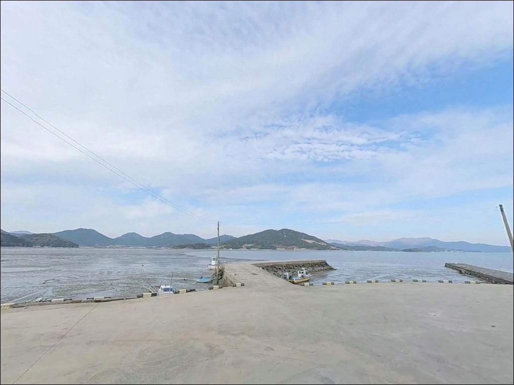
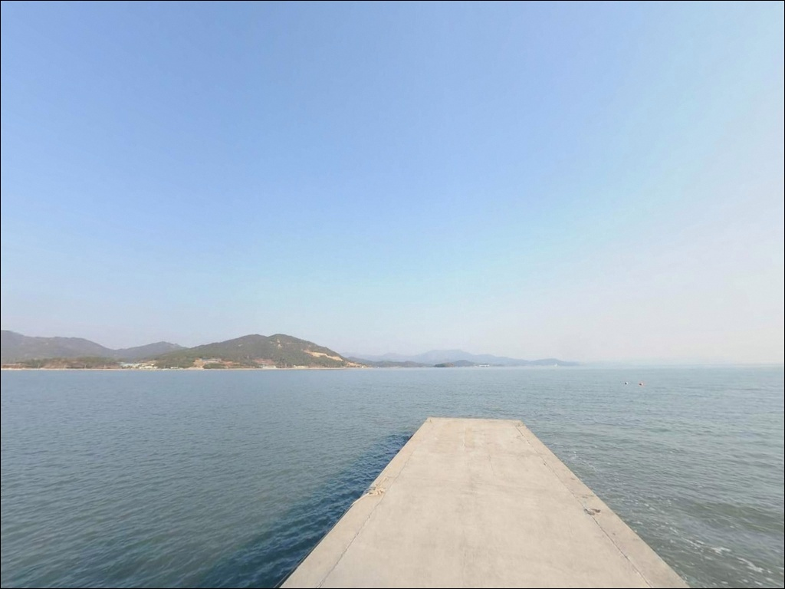
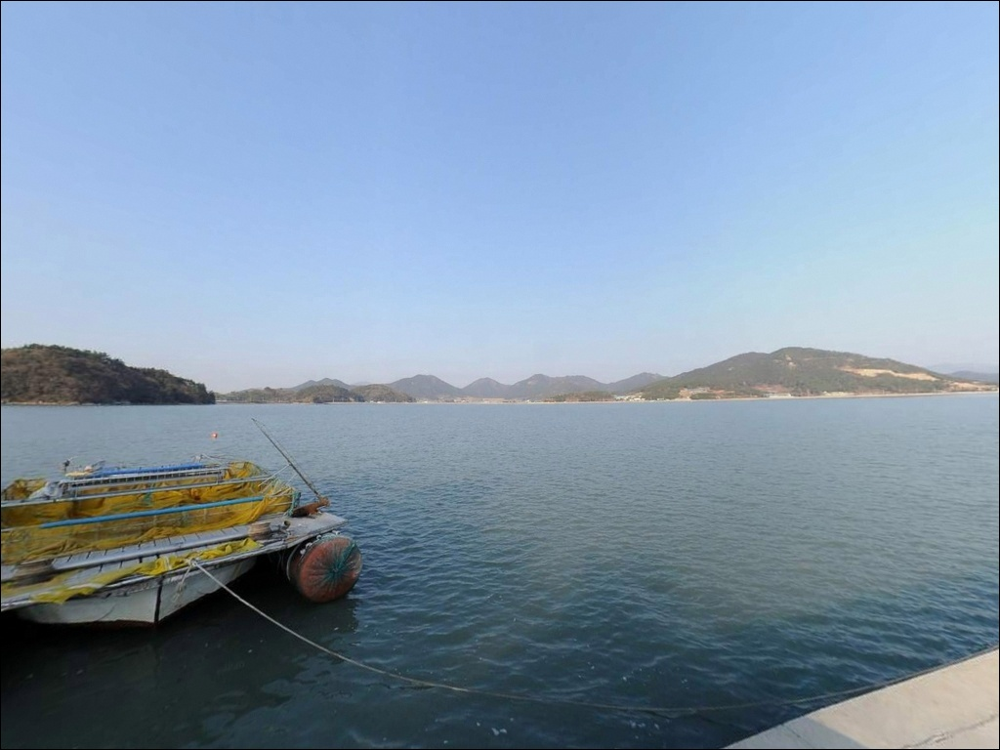
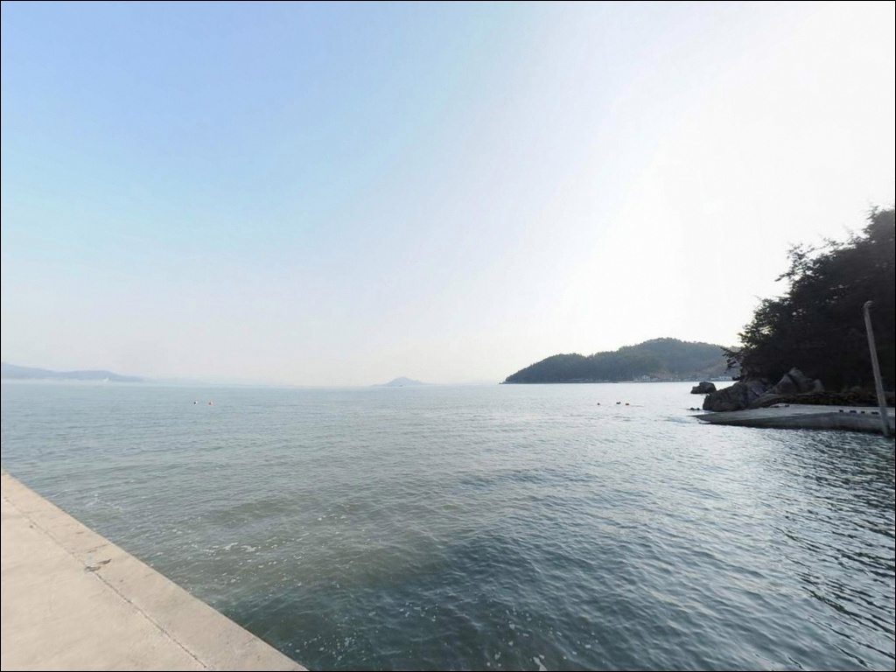
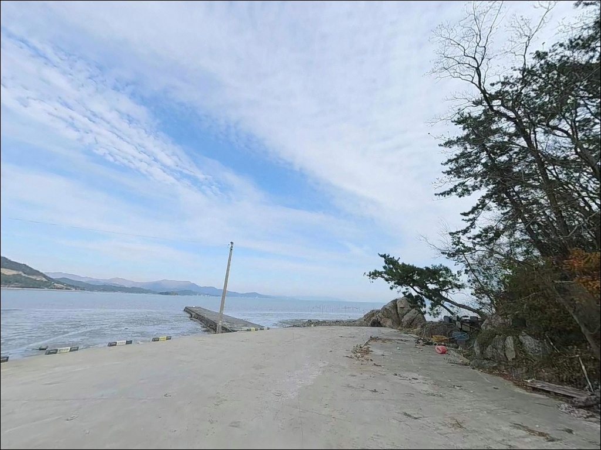
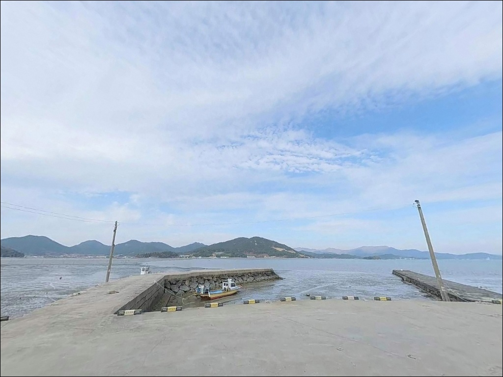
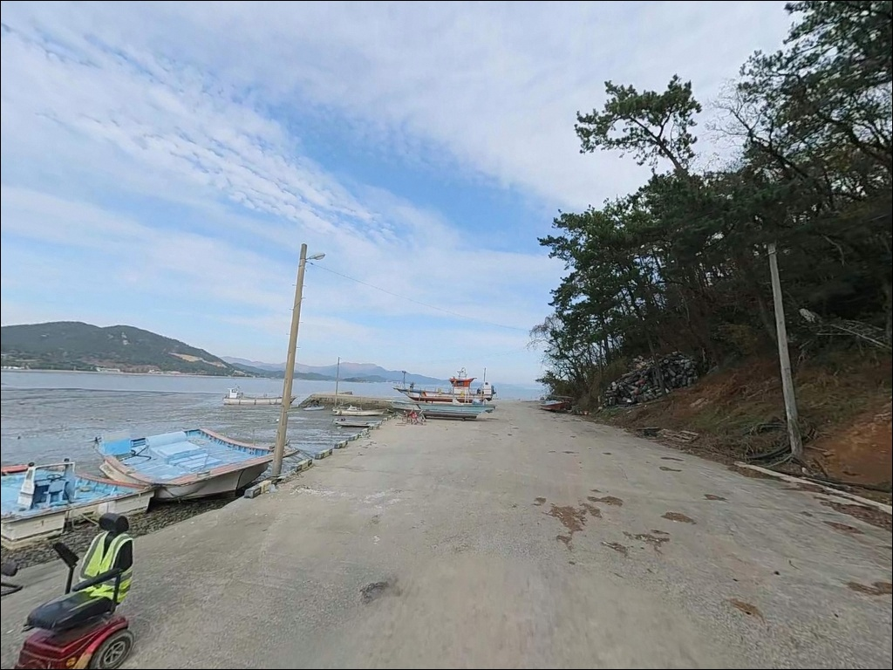

고마리선착장, 전남 장흥군 푸른 외항 바다 앞 방파제 차박 낚시 명소
이 페이지에는 광고(제휴 링크 포함)가 있으며, 광고 링크를 통해 구매하면 운영자가 판매 수익 또는 수수료를 받을 수 있습니다. 포인트 사진: 카카오맵 스카이뷰·로드뷰. 이 페이지의 지도·사진 이미지는 카카오맵의 실제 서비스 이미지와 다를 수 있습니다.


포인트 안내
고마리선착장
전남 장흥군 관산읍 고마리 산 35-10
간조 시 선착장 앞 수심이 급격히 낮아져
갯벌이 드러나는 구조입니다.
물때 계산 없이 현장에 도착하면
낚싯대를 풀기도 전에 썰물이 진행 중인 상황을
마주칠 수 있습니다.
장흥군 관산읍 고마리 해안,
득량만 안쪽에 자리한 이 선착장은
서쪽으로 길게 뻗은 일자형 구조로
어선 계류 공간과 낚시 가능 구간이
자연스럽게 나뉘어 있습니다.
마을형 체험관광지로 등록된 고마리마을을 품고 있어
접근성과 주변 편의 여건은
소형 선착장치고 안정적인 편입니다.
이 글은 고마리선착장의
진입 환경, 차박 여건, 물때 판단 기준,
낚시 방식별 공략 조건에 집중합니다.
조황 단정이나 특정 어종 보장은
이 글의 범위에 포함되지 않습니다.

1. 진입 동선과 포인트 접근 여건
고마리마을은 관산읍 소재지에서
해안도로를 따라 이어지는 포장도로로 연결되어 있습니다.
마을 입구까지는 일반 차량이 진입하는 데
큰 어려움이 없는 수준의 도로 조건입니다.
다만 선착장으로 향하는 마을 내부 도로는
1차로 폭의 농어촌 도로 구조로,
대형 차량이라면 진입 전에
위성지도로 도로 폭을 확인하는 편이 좋습니다.
선착장 인근에는 어선 작업 공간과
선착장 시작 지점의 공터가 확인됩니다.
소형 차량 기준 회차가 가능한 수준이며,
공터 외 구간에서 주차할 경우
어선 이동 동선을 막지 않는 자리를
먼저 확인하는 것이 기본 매너입니다.
마을형 관광지로 등록된 특성상
방문 차량을 수용할 수 있는 주차 여건이
마을 단위로 갖춰져 있습니다.
선착장 갓길 주차와 공터 주차를
병행 활용하면 자리 확보에 무리는 없습니다.

2. 차박 환경과 야간 체류 여건
고마리마을은 민가가 해안선과 가까이 분포하는 구조입니다.
마을 내 조명이 일부 설치되어 있어
완전 암흑 환경은 아니지만,
선착장 끝단이나 외곽 구간으로 나가면
개인 헤드랜턴이 필수인 어두운 구역으로 바뀝니다.
야간 낚시를 계획한다면 투광등을 별도로 챙기는 편이 좋습니다.
내만 구조상 파도와 너울의 직접 영향이 적어
차 안에서의 체류 여건은 안정적인 편입니다.
다만 마을과의 거리가 가까운 만큼
야간 소음과 조명 사용은 주민 배려 차원에서
최소한으로 절제하는 것이 기본입니다.
득량만 내만 특성상 강한 바람이 직접 도달하지 않는 구조로,
기상 악화 시에도 체류 자체에는
큰 영향이 없는 편입니다.
그러나 만조 시 파도가 선착장 상판으로 넘칠 수 있으므로
기상 예보 확인은 출발 전에 반드시 마쳐두어야 합니다.


3. 주변 편의시설 및 인프라 현황
고마리마을 안에는 해산물 전문 식당이
여러 곳 밀집해 있습니다.
출조 전후로 현지 식사를 해결하는 데
불편함이 없는 수준입니다.
편의점과 마트는 관산읍 소재지까지
차량 약 10분 거리에 있으며,
주유소도 읍내에 위치하고 있습니다.
화장실은 고마항 인근 공중화장실이
약 800m 거리에 있습니다.
선착장 현장에는 별도 화장실 시설이
확인되지 않으므로,
장시간 체류를 계획한다면
이동 동선을 미리 파악해두는 편이 좋습니다.
응급 상황 대비용으로는 관산읍 소재지가
가장 가까운 생활 거점입니다.
식수와 소모 채비는 읍내에서
사전에 충분히 챙겨두고 진입하는 편이
현장 체류를 안정적으로 만드는 기본 준비입니다.

물때를 놓치면 낚시 자체가 성립하지 않는 이유
고마리선착장에서 가장 먼저 확인해야 할 것은
물때입니다.
이 선착장은 간조 시 선착장 앞쪽 수심이 매우 낮아지고
갯벌이 드러나는 내만 지형의 특성을 가집니다.
만조 기준 수심이 3~5m권으로 유지되지만,
썰물이 진행될수록 낚시 가능한 수심 확보 구간이
급격히 줄어드는 구조입니다.
바다타임에서 관산읍 기준 물때를 확인하고
만조 전후 2시간을 중심으로 출발 시각을 맞추는 것이
이 포인트를 제대로 공략하는 방법입니다.
조류는 창조류·낙조류 모두
상당한 속도로 흐르는 구간이 있습니다.
채비가 자꾸 쓸려나간다면
봉돌 무게를 올리거나
조류가 잦아드는 정조 타이밍을 기다리는 편이
채비 손실을 줄이는 현실적인 대응입니다.
기상 변화도 꼼꼼히 확인해야 합니다.
장흥군은 남해 해역 특성상 강수량이 많고
해풍 변화가 빠른 지역입니다.
출조 당일 아침 기상청 해양 날씨를 한 번 더 확인하고,
만조 시 파도가 선착장 위로 넘칠 수 있는
기상 조건이라면 진입을 미루는 판단이 필요합니다.

5. 지형 기반 낚시 여건 분석
고마리선착장은 득량만 서안에 자리한
내만형 소형 선착장입니다.
득량만은 장흥·고흥 반도에 둘러싸인 반폐쇄형 내만으로,
외해의 너울과 강풍이 직접 도달하지 않는 구조입니다.
이 지형 특성이 날씨가 다소 좋지 않아도
조황이 유지되는 안정적인 낚시 조건을
만들어내는 바탕이 됩니다.
선착장 구조는 서쪽으로 길게 뻗은 일자형이며,
어선 계류 구간을 제외한 선착장 끝단 쪽이
낚시 가능한 주요 구간입니다.
끝단 전방으로는 수심이 비교적 빠르게 깊어지는
내만 지형 특성이 나타나며,
갯벌과 모래·혼합저질 구간이
다양한 저서어종이 머무는 환경을 형성합니다.
선착장 석축 주변에는 지형지물이 형성되어
어종이 붙기 좋은 구조입니다.
가을철에는 감성돔, 수온 상승기에는
아나고와 도다리 계열 어종이
이 일대 해역을 회유하는 패턴을 보입니다.
출조 전 장흥 관산읍 일대 조황과
득량만 방파제 낚시 검색을 먼저 해보시기 바랍니다.


6. 포인트에 어울리는 낚시 스타일
이 포인트에서 가장 기본이 되는 낚시 방식은
원투낚시입니다.
선착장 끝단에서 정면 득량도 방향으로 장타하면
모래와 뻘이 섞인 혼합저질 구간을 공략할 수 있습니다.
들물 전후 입질 타임에
바닥층을 노리는 방식이 이 지형 구조와 잘 맞으며,
채비가 쓸리지 않는 타이밍을 먼저 확인하고
투척 방향을 잡는 것이 기본입니다.
연안 루어낚시도 유효한 스타일입니다.
내만형 선착장 구조에서는 농어가 석축 주변에
붙어 있는 경우가 많습니다.
소형 미노우나 지그헤드 채비로
선착장 가장자리 석축 라인을 따라
만조 전후 시간대에 천천히 흘리는 방식이
이 포인트 지형 조건에 어울립니다.
찌낚시도 선착장 측면에서 운용할 수 있습니다.
조류가 흐르는 방향으로 찌를 흘리면서
3~4m 수심 바닥권을 노리는 방식으로,
들물이 차오르는 시간대에
릴찌낚시 채비를 운용하면
이 일대 내만형 어종과 만날 가능성이 생깁니다.

7. 대안 포인트와 플랜 B 동선
고마리선착장이 조류 조건이나
현장 상황에 맞지 않을 때,
득량만 해안선을 따라 이어지는
인근 소형 방파제·선착장들이
첫 번째 대안입니다.
같은 득량만 해역을 공유하는 포인트들이라
조황과 어종 패턴을 상호 참고하기에 적합하며,
출발 전 카카오맵으로 관산읍 및 대덕읍 일대
소형 방파제 위치를 미리 파악해두면
이동 결정을 빠르게 내릴 수 있습니다.
삼산방조제 구간은 방조제 형태로
차량 접근성이 좋고 발판이 안정적입니다.
득량만 동일 수계라 조류 패턴이 유사하여
고마리선착장과 연동해
당일 조류 조건에 맞춰 선택하기 좋은
대안 포인트입니다.
장흥 남단으로 이동할 여유가 있다면
정남진해양낚시공원을 플랜 B로 두는 것도
방법입니다.
원투와 찌낚시 전용 구조로 정비된 시설이며,
편의시설과 발판 여건이 안정적이라
초행 방문자에게도 부담 없는 선택지입니다.

물때 하나 맞추면
고마리선착장이 달라 보입니다
원투낚시와 연안 루어를 즐기는 낚시인이라면
득량만 내만 구조가 만들어주는
안정적인 낚시 환경은
잘 맞는 조건입니다.
외해 너울 없이 조용하게 낚시를 풀어가면서
아직 온라인에 많이 알려지지 않은
포인트를 직접 답사하는 것 자체가
이 선착장의 매력이기도 합니다.
반면 물때 계산 없이 간조 타이밍에 도착하거나,
기상 확인 없이 만조 파도가 넘치는 날에
선착장 끝단에 서 있으면
낚시 여건을 아예 못 만드는 상황이 됩니다.
물때 확인, 현장 진입로 사전 체크, 자급 준비
이 세 가지를 갖추고 간다면
기억에 남는 조용한 출조가 될 수 있는 곳입니다.
고마리마을의 해산물 식당에서 출조 전 식사를 마치고,
들물 타이밍에 맞춰 선착장에 자리를 잡고,
만조가 빠질 즈음 차 안에서 하룻밤을 보내는 일정이라면
낚시와 차박을 동시에 누릴 수 있는
조용한 득량만 포인트입니다.